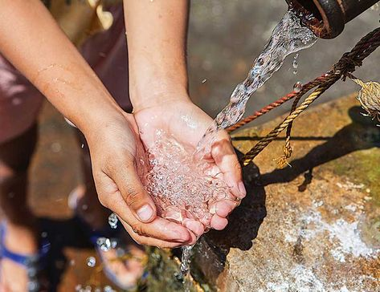

Global Issues: Water
by United Nations
Better access to water is helping create new possibilities for people in some of the world’s most remote communities. Goal 6 of the UN’s Sustainable Development Goals is ensuring availability and sustainable management of water and sanitation for all.

Water is at the core of sustainable development and is critical for socio-economic development, energy and food production, healthy ecosystems and for human survival itself. Water is also at the heart of adaptation to climate change, serving as the crucial link between society and the environment...